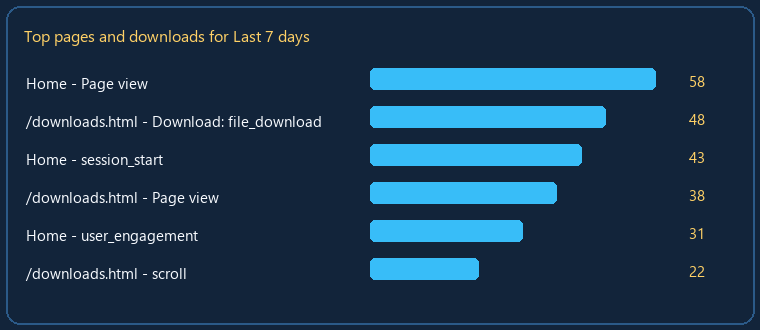

Pages, Downloads, and Actions

Top pages and downloads shown as a readable chart.
Home page is displayed when GA4 reports the path /.
Download events appear when the website emits file_download or download-style events.
The chart follows the selected date range.